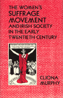

<body bgcolor="#FFFFFF" text="#000000" link="#0000FF" vlink="#CC0000" alink="#CC0000"><center><hr width="350" size="1" align="center" noshade>Traces the women’s suffrage movement in Ireland in the period before World War I<hr width="350" size="1" align="center" noshade><p><a href="https://cdcshoppingcart.uchicago.edu/Cart/ChicagoBook.aspx?ISBN=9780877226369&&PRESS=temple" target="_top">Buy this book!</a> | <a href="https://cdcshoppingcart.uchicago.edu/Cart/Cart.aspx?PRESS=temple" target="_top">View Cart</a> | <a href="https://cdcshoppingcart.uchicago.edu/Cart/Cart.aspx?PRESS=temple" target="_top">Check Out</a></p><p></p></center><!--none//--><h1>Women's Suffrage Movement and Irish Society in the Early Twentieth Century</h1>
<h3>Cliona Murphy</h3>
<P>cloth 0-87722-636-9 $34.95, Jun 89, <FONT COLOR=#990033>Out of Print</FONT>
<BR> 240 pp
</P><BLOCKQUOTE><I>"An important contribution to the field of both Irish studies and women’s studies. It fills a gap in our knowledge of modern Irish history and is part of an increasing number of studies about Irish women.... This book asks important questions about the relation of women’s issues to nationalism and to religion."</I>
<br>&#151<b>Maryann Valiulis</b>, Newcomb College Center for Research on Women, Tulane University<I></I></BLOCKQUOTE>
<p>This book traces the women’s suffrage movement in Ireland in the period before World War I and provides important new chapters in the history of women and in modern Irish history. Cliona Murphy argues that the Irish Women’s Suffrage Movement was of international significance. She describes its social origins and explores the tension felt by women who wanted to preserve the Irish movement’s independence while contributing to the work of an international sisterhood.
<p>Comparing the Irish movement to contemporary suffrage activities in England and America, Murphy shows how participants were viewed by different segments of Irish society&#151the public, the press, the Church, and the intelligentsia&#151and how that movement affected Irish society and challenged its views on the role of women. At the height of the suffrage movement, the third Home Rule Bill was going through Parliament. The author describes the unsuccessful attempt of the women to persuade the Irish Nationalist Party to include a women’s suffrage amendment in the Bill.
<p>Murphy examines the attitudes that encouraged Irish women to campaign publicly, to resort to violence, and to accept incarceration for "the cause." In addition, she addresses the broader questions of political, economic, moral, religious, and psychological issues raised by the suffragists’ efforts.
<BR>&nbsp;<H2>About the Author(s)</H2>
<P><b>Cliona Murphy</b> is Lecturer in History at the University College in Dublin.</P>
<BR><H2>Subject Categories</H2>
<p><A HREF="/tempress/women.html" TARGET="_top">Women's Studies</a>
</p>
<p align="center"><a href="https://cdcshoppingcart.uchicago.edu/Cart/ChicagoBook.aspx?ISBN=9780877226369&&PRESS=temple" target="_top">Buy this book!</a> | <a href="https://cdcshoppingcart.uchicago.edu/Cart/Cart.aspx?PRESS=temple" target="_top">View Cart</a> | <a href="https://cdcshoppingcart.uchicago.edu/Cart/Cart.aspx?PRESS=temple" target="_top">Check Out</a></p><p><font face="Arial" size="1"><a href="copyright.html" onMouseOver="window.status='Web Copyright Policy';return true;" onMouseOut="window.status=''" title="Web Copyright Policy">&copy;</a> 2015 <a href="http://www.temple.edu" target="new" onMouseOver="window.status='Link to Temple University home page';return true;" onMouseOut="window.status=''" title="Link to Temple University home page">Temple University</a>. All Rights Reserved. http://www.temple.edu/tempress/titles/691_reg.html</font></p>